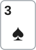
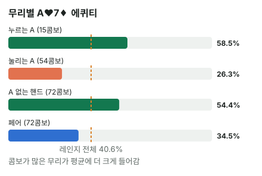

안녕하세요. A♥7♦ 같은 핸드를 받으면 "A가 있으니까" 하고 들어가게 되죠. 그리고 플랍에 A가 떨어지면 "맞았다!" 하고 리버까지 따라가고요.
I15에서 KJ가 AK를 만나면 왜 불리한지, 같은 카드를 나눠 가지면 승부가 키커로 넘어간다는 도미네이트를 배웠죠. 오늘은 그 원리를 A-x 오프수트 대 상대 레인지 전체로 넓혀요. 같은 A♥7♦가 왜 상대에 따라 극과 극이 되는지, 그리고 A가 맞은 플랍에서 따라가면 실제로 무엇을 잃는지 숫자로 따라가 볼게요.
이 글에서 배울 것
- 상대 레인지를 A-x 기준으로 누르는 A / 눌리는 A / A 없는 핸드 / 페어 네 무리로 나누고, 레인지 에퀴티가 그 콤보 가중 평균이라는 것
- Hero의 A가 상대의 AA·AK를 줄여 주기만 하는 블로커 효과
- A가 맞은 플랍에서 키커가 약할 때 이기는 길이 무엇뿐인지
오늘의 장면


앞자리(UTG) 상대가 레이즈해요. Hero는 버튼에서 A♥7♦로 콜. 플랍은


상대가 크게 벳해요. Hero는 "A 맞았다!" 하고 콜하고 싶어요. 이 글에서는 벳 금액을 정하지 않고, 이 A가 상대 레인지를 상대로 얼마나 버티는지만 봐요. 콜·폴드를 가르는 금액 계산은 필요 에퀴티 글에서 하던 그대로 그 위에 얹으면 돼요.
용어 몇 개만 먼저 정할게요.
- 오프수트 = 두 장의 무늬가 다른 핸드. A7o의 o가 오프수트, A2s의 s는 같은 무늬(수딧)예요
- 키커 = 같은 페어끼리 붙을 때 승부를 가르는 나머지 카드. A♥7♦가 A 페어가 되면 키커는 7이에요
- 레인지 = 상대가 이 상황에서 들고 있을 수 있는 핸드 전체
- 몬테카를로 = 남은 카드를 무작위로 수천 번 깔아 보고 이긴 비율을 세는 어림 계산
1단계. 왜 A에 손이 갈까
"A가 있으면 기본은 한다"는 느낌
A는 혼자서도 가장 높은 하이 카드이고, 플랍에 A가 떨어지면 바로 탑페어가 돼요. 그래서 들어갈 때도 "A가 있으니까", 플랍에서도 "탑페어니까"로 두 번 안심하게 돼요.
그런데 그 안심은 상대에게 A가 없을 때의 이야기예요. 상대도 A를 들었다면 두 A는 서로 지워지고, 승부는 I15에서 본 대로 키커로 넘어가요. A♥7♦의 키커는 7이라, 7보다 높은 키커의 A를 만나면 밀려요.
신발 비유
A-x는 같은 브랜드 신발이에요. 맨발인 사람(A 없는 상대)과 달리면 신발 덕을 크게 보지만, 같은 신발을 신은 사람과 달리면 결국 다리 힘(키커)에서 승부가 나요.
이게 무슨 뜻이냐면, A-x의 값은 A 자체가 아니라 상대 레인지에 A를 든 핸드가 얼마나 있고, 그 A의 키커가 얼마나 높으냐에 달려 있다는 거예요.
2단계. 핸드 하나씩 붙여 보기
먼저 극단 두 개를 볼게요(프리플랍은 몬테카를로 어림).
| 상대 | 프리플랍 Hero 에퀴티 |
|---|---|
| A♠K♣ (A를 같이 들고 키커가 높음) | 약 26.81% |
| K♠Q♣ (A가 없음) | 약 57.95% |
같은 A♥7♦가 상대에 따라 두 배 넘게 차이가 나요. 그래서 A-x는 핸드 하나로 값을 매길 수 없고, 상대 레인지를 나눠 봐야 해요.
3단계. 레인지를 네 무리로 나누기
왜 넓은 레인지로 먼저 볼까
오늘 장면은 UTG 레이즈지만, 여기서는 네 무리가 다 들어 있는 넓은 레인지로 나누는 법부터 익힐게요. 무리가 하나라도 비어 있으면 나누는 연습이 안 되니까요. UTG처럼 좁은 레인지는 연습 문제 1에서 같은 방법으로 직접 나눠 봐요.
22+, A2s+, K9s+, QTs+, JTs, T9s, 98s, ATo+, KJo+, QJo
Hero가 A♥·7♦를 들고 있으니 이 카드가 든 조합을 빼면 215콤보(콤보 = 카드 두 장의 조합 하나)예요. 이 레인지 전체를 상대로 A♥7♦ 에퀴티는 약 40.64%예요.
네 무리 표
A♥7♦ 기준으로 나누면 이렇게 돼요(무리마다 몬테카를로를 따로 돌린 어림).
| 무리 | 핸드 | 콤보 | A♥7♦ 에퀴티 |
|---|---|---|---|
| 누르는 A | A2s~A6s | 15 | 약 58.49% |
| 눌리는 A | A8s 이상, ATo 이상 | 54 | 약 26.33% |
| A 없는 핸드 | K9s+, QTs+, JTs, T9s, 98s, KJo+, QJo | 72 | 약 54.45% |
| 페어 | 22~AA | 72 | 약 34.46% |
나머지 2콤보는 A7s로, Hero와 키커까지 같은 핸드예요(대부분 비겨요). A2s~A6s가 무리당 3콤보인 건 Hero의 A♥ 때문에 하트 수딧이 빠져서예요.
💡 빨리 세는 팁: A 수딧은 Hero가 A 한 장을 들고 있으면 4에서 3콤보, A 오프수트(예: AK)는 남은 A 3장마다 무늬가 다른 K 3장을 짝지어 3 × 3 = 9콤보
레인지 에퀴티는 네 무리의 가중 평균
레인지 전체 에퀴티는 무리별 에퀴티를 콤보 수만큼 무게를 줘서 평균 낸 것이에요. 표의 숫자를 넣어 보면
(15 × 58.49 + 54 × 26.33 + 72 × 54.45 + 72 × 34.46 + A7s 2콤보 몫) ÷ 215
를 계산하면 41에 조금 못 미치는 값이 나와요. 레인지를 한 번에 돌린 약 40.64%와 소수점 아래가 조금 다른 건, 무리마다 몬테카를로를 따로 돌린 어림 오차예요.
이게 무슨 뜻이냐면, 레인지 에퀴티를 움직이는 건 무리별 에퀴티와 무리의 크기 두 가지라는 거예요. 무리별 에퀴티는 A♥7♦가 정하지만, 무리의 크기는 상대가 정해요.
표에서 읽을 것
- A를 든 핸드끼리: Hero는 키커 7보다 낮은 A(A2~A6)는 누르고, 높은 A(A8 이상)에는 눌려요. 오프수트 A-x는 이 두 무리의 크기 싸움이에요
- A 없는 핸드: A가 Hero만의 무기가 돼서 앞서요
- 페어: Hero가 밀려요. 보통 A가 와야 앞서고, 66 이하 작은 페어에는 7이 와도 앞서요

4단계. Hero의 A가 하는 일: 블로커
A-x에 좋은 점도 하나 있어요. Hero가 A를 한 장 들고 있으면, 상대가 A를 가질 수 있는 조합이 줄어요.
| 상대 핸드 | Hero 카드를 모를 때 | Hero가 A♥7♦일 때 |
|---|---|---|
| AA | 6콤보 | 3콤보 |
| AK | 16콤보 | 12콤보 |
AA는 남은 A 세 장에서 두 장이라 반으로, AK는 A가 3장만 남아 4분의 3으로 줄어요. 이렇게 내 손의 카드가 상대의 강한 핸드를 줄여 주는 걸 블로커라고 해요.
다만 블로커는 줄여 줄 뿐 없애지는 못해요. 눌리는 A 무리는 블로커를 반영하고도 54콤보로, 누르는 A 무리(15콤보)의 세 배가 넘어요.
5단계. A가 맞은 플랍: 따라가면 무엇을 잃나
990가지로 세 보기
이제 오늘 장면, A♣8♦3♠ 플랍이에요. 상대가 A♠K♣라고 해 볼게요. 남은 45장에서 턴·리버 두 장을 고르는 경우는 45 × 44 ÷ 2 = 990가지예요. 전부 세면
- Hero가 이기는 조합 111가지
- 비기는 조합 12가지
- Hero가 지는 조합 867가지
비긴 판은 팟을 반씩 나누니, Hero 에퀴티는 (111 + 12 ÷ 2) ÷ 990 = 약 11.82%예요.
같은 플랍에서 상대가 A 없는 K♠Q♣라면 Hero는 990가지 중 959가지를 이기고 비김은 없어서 약 96.87%예요. A가 맞은 같은 플랍인데, 상대가 A를 들었느냐에 따라 거의 다 지거나 거의 다 이겨요. I15에서 K-8-3 플랍으로 본 탑페어 키커 싸움과 같은 구조가 A에서 일어난 거예요.
이기는 111가지의 공통점
이기는 111가지는 전부 턴이나 리버에 7이 떨어지는 경우예요. 7이 와서 A와 7의 투페어가 되는 것 말고는, 키커 7이 K를 이길 길이 없어요.
그것도 7만 오면 되는 게 아니에요. 7과 함께 K가 떨어지면 상대가 A와 K의 투페어로 더 높고, 7과 8이 함께 떨어지면 보드의 8 페어 때문에 상대의 A·8 투페어에 K 키커가 붙어 Hero가 져요. 이기는 길이 좁고 조건까지 붙는 것이 약한 키커의 진짜 모습이에요.
"맞았다"에서 리버까지 따라가면
플랍에서 "A 맞았다" 하고 콜, 턴에도 콜, 리버에도 콜하면 Hero는 세 번 칩을 넣어요. 그런데 상대가 A♠K♣라면 그 세 번의 콜이 이기는 판은 990가지 중 111가지, 10판에 1판 남짓이에요. 나머지 대부분(867가지)에서는 넣은 칩을 잃고, 비기는 12가지에서만 팟을 나눠요.
이게 무슨 뜻이냐면, A-x의 함정은 한 번의 콜이 아니라 따라가는 길 전체에 있다는 거예요. 플랍에서 한 번 안심하면 턴·리버에서도 같은 이유로 안심하게 되고, 상대가 높은 A일 때마다 판이 커진 채로 져요.
왜 그럴까: A-x는 상대 레인지 속 'A의 지도'를 따라 움직인다
I15의 KJ 대 AK처럼, 카드 한 장을 나눠 가진 핸드끼리는 키커 싸움이 돼요. A-x가 이 구조에 특히 자주 걸리는 이유는 레이즈하는 레인지에 A를 든 핸드, 그중에서도 키커가 높은 A가 많이 들어가기 쉽기 때문이에요. 오늘 넓은 레인지에서도 눌리는 A가 54콤보, 누르는 A가 15콤보였죠.
그래서 A-x의 판단은 결국 상대 레인지 속 A가 어디에 몇 개 있느냐, 즉 A의 지도를 그리는 일이에요. 키커가 낮을수록 지도에서 "내가 누르는 A"의 칸이 좁아지고, 레인지가 좁아질수록 그 좁은 칸마저 먼저 빠져나가요.
오프수트라는 점도 한몫해요. A끼리 붙었을 때 수딧이면 플러시라는 탈출구가 조금 있지만, 오프수트는 그것도 없어서 이 지도에 더 크게 휘둘려요.
자주 하는 실수
실수 1. 플랍에 A가 맞으면 리버까지 "탑페어니까"로 따라가기 5단계에서 본 대로, A♣8♦3♠에서 A♠K♣를 만나면 A♥7♦가 이기는 판은 990가지 중 111가지뿐이고, 그것도 전부 7이 와야 했어요. "탑페어"라는 이름은 같아도 상대 A의 키커가 높으면 이름값을 못 해요. 상대 액션이 높은 A를 가리킬 때는, 턴·리버로 갈수록 "내가 이기는 카드는 몇 장인가"를 다시 물어야 해요.
실수 2. "내가 A를 들었으니 상대 AA·AK는 없겠지" 4단계의 블로커를 너무 믿는 실수예요. A♥를 들면 AA는 3콤보, AK는 12콤보로 줄 뿐 남아 있어요. 줄어든 걸 "없다"로 바꾸면, A가 맞은 플랍의 큰 벳 앞에서 상대를 약하게 읽게 돼요.
"그럼 A-x 오프수트로는 늘 폴드해요?"
좋은 질문이에요. 아니에요. 3단계 표처럼 A 없는 핸드와 누르는 A가 큰 무리를 차지하는 상대에게는 A-x가 앞서요.
넓게 오픈하는 자리의 레이즈라면 이런 핸드가 섞일 수 있어서 A-x로 콜을 검토할 수 있어요. 다만 블라인드에서 받으면 플랍부터 먼저 행동해야 해서, 계산된 에퀴티를 다 가져가기 어려운 점도 함께 따져야 해요(에퀴티 실현은 I31에서 배워요). 자리마다 오픈 레인지가 어떻게 다른지는 I11에서 다뤄요.
숫자가 뒤집히는 지점
기준은 상대 레인지에서 '눌리는 A + 페어'와 '누르는 A + A 없는 핸드'가 각각 몇 콤보인지, 그 크기 비율이에요. 가중 평균이라 콤보 수가 큰 무리 쪽으로 에퀴티가 끌려가요.
선생님의 한마디
A-x 오프수트로 레이즈를 받으면 칩을 잡기 전에 이렇게 해요.
- 상대 레인지에서 A를 든 핸드의 키커가 내 키커보다 높은 쪽에 몰려 있는지 한 번 떠올려요
- 콜한다면 플랍 전에 선을 정해 둬요. 예를 들어 "A가 맞아도 턴까지 두 번 크게 걸어 오면 접는다"처럼요
- 콜하기 전에 레이즈한 자리의 오픈 레인지를 떠올리고, 눌리는 A가 누르는 A보다 몇 배쯤인지 어림해요
연습 문제
학습툴 에퀴티 계산기는 핸드 대 핸드(우리 핸드와 상대 핸드 하나)만 넣을 수 있어요. 레인지 에퀴티는 정답의 숫자(블로그에서 직접 계산한 값)를 따라가 보고, 학습툴에는 대표 핸드 하나(예: A♥7♦ 대 A♠Q♣)를 넣어 비교해 보세요.
레인지 표기: T는 10, +는 그 위 전부(TT+ = TT부터 AA까지, AJs+ = AJs·AQs·AKs처럼 앞 카드는 그대로 두고 뒤 카드만 올라감)예요.
문제 1. 이번 상대는 TT+, AJs+, KQs, AQo+로만 오픈하는 사람이에요. 이 레인지에서 Hero A♥7♦ 카드를 뺀 콤보를 3단계처럼 네 무리별로 직접 세어 보세요. 그리고 Hero가 앞서는 무리(누르는 A + A 없는 핸드)가 전체 중 몇 콤보인지 구해, 계산기가 낸 레인지 에퀴티 약 27.17%가 왜 이렇게 나오는지 무리 크기로 설명해 보세요.
정답 보기
Hero 카드를 빼면 전체 58콤보예요.
- 누르는 A: 없음(A2~A6이 하나도 없어요)
- 눌리는 A: AJs·AQs·AKs 각 3, AQo·AKo 각 9 → 9 + 18 = 27
- A 없는 핸드: KQs 4콤보
- 페어: TT·JJ·QQ·KK 각 6, AA 3 → 6 × 4 + 3 = 27
Hero가 앞서는 무리는 4콤보뿐이고, 54콤보가 Hero를 누르는 쪽이에요. 가중 평균이 콤보가 큰 무리 쪽으로 끌려가니, 레인지 에퀴티는 눌리는 A·페어 무리의 에퀴티 근처까지 내려와요. 그래서 넓은 레인지(약 40.64%)보다 훨씬 낮은 약 27.17%가 돼요.
문제 2. 이번엔 A가 없는 플랍 K♠7♣2♦예요. Hero A♥7♦, 상대 A♠J♦. 상대 핸드는 그대로 A를 든 핸드인데 플랍만 바뀌었죠. 이번에도 A끼리의 키커 싸움일까요? 누가 앞서고, 상대는 어떤 카드가 와야 역전할까요?
정답 보기
Hero가 약 85.35%로 크게 앞서요(990가지 중 845가지 이김, 비김 없음).
이번엔 키커 싸움이 아니에요. 플랍에 A가 없어서 두 사람의 A는 아직 페어가 안 됐고, 대신 Hero의 7이 보드와 짝이 맞아 7 원페어가 됐어요. 상대 A♠J♦는 A 하이뿐이죠.
상대가 역전하려면 주로 J가 떨어져야 해요. Q와 T가 같이 떨어지면 A-K-Q-J-T 스트레이트로도 역전해요. 반대로 A가 떨어지면 상대는 A 페어가 되지만 Hero도 A와 7의 투페어가 돼서 대개 Hero가 그대로 이겨요(A와 K가 같이 떨어지는 경우처럼 몇 가지 예외는 있어요). 두 사람이 같이 든 A는 상대의 아웃츠가 되기 어려운 거예요.
핵심 정리
- A-x 오프수트의 레인지 에퀴티는 네 무리 에퀴티의 콤보 가중 평균: 누르는 A·A 없는 핸드에는 앞서고, 눌리는 A·페어에는 밀려요
- A가 맞은 같은 플랍에서도 상대가 높은 A면 거의 다 지고, A가 없으면 거의 다 이겨요
- Hero의 A는 상대 AA·AK를 줄이는 블로커지만, 눌리는 A를 없애지는 못해요
- 약한 키커의 탑페어는 이기는 길이 좁고 조건까지 붙어요. 그래서 함정은 한 번의 콜보다 리버까지 따라가는 길 전체에 있어요
정리하며
오늘은 A♥7♦로 넓은 레인지를 네 무리로 나누고, 레인지 에퀴티가 무리별 에퀴티의 가중 평균이라는 걸 확인했어요. A가 맞은 플랍에서도 상대가 높은 A라면 이기는 길이 아주 좁아서, 따라가는 길 전체가 손해였죠. 실전에서는 "A가 있다"보다 "상대 레인지 속 A가 어디에 몰려 있나"를 먼저 떠올리세요.
다음 글 I25에서는 핸드에서 잠깐 벗어나 토너먼트 구조를 읽는 법을 다뤄요. 블라인드 레벨·앤티·리엔트리·레이트 레지 같은 규칙이 각각 판의 무엇을 바꾸는지 봐요.
AI 작성 · 숫자는 계산 검증 (프리플랍은 몬테카를로, 플랍은 전부 세기) · 상대 핸드·레인지는 연습용 예시